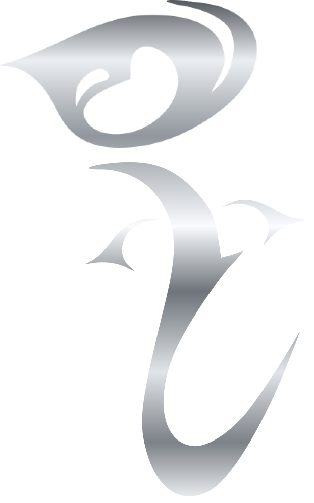

Portfolio 2026 · Chartres, France
Bastien
Berceron
Je conçois des interfaces, je les code, et je m'occupe de leur faire trouver leur public.


Un créateur d'expériences
Étudiant en design, programmation et marketing, je construis des expériences numériques entre direction artistique, interface et code.
- Design
- UI / UX
- Code
Mes projets
Huit travaux entre affiche, packaging, édition, interface et création textile. Survole un titre pour l'aperçu, clique pour ouvrir.
Portrait chinois
Un mélange de consoles, de mode, de culture japonaise et de chrome, comme un menu de jeu de 2006.
Discutons.
Un projet, une idée, ou simplement l'envie d'échanger ? Écris-moi.